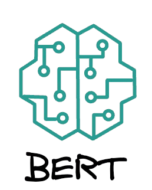

AI-Driven Business Process Automation View
Stack: Python, Transformers (Modern-BERT), PostgreSQL, n8n, Gemini API
- Scraped leads using Apify, classified sentiments (positive/neutral/negative), and stored them in a SQL database.
- Implemented AI-personalized replies for comments leveraging Google Gemini and dynamic templates.
- Configured automated workflows in n8n, integrating webhook-based engagement and campaign analytics.
- Accuracy: Achieved 94.82% on the sentiment classifier.
- Challenges: Addressed token limit handling, real-time delay resolution, and effective template embedding.



AIRA – AI-Powered Research Assistant View
Stack: FastAPI, Streamlit, ChromaDB, LangGraph, HuggingFace, Google Gemini, GitHub API, arXiv API.
- Engineered an AI-powered research assistant with a natural language interface that uses Retrieval-Augmented Generation (RAG) to analyze and interact with content from arXiv, GitHub, and local documents.
- Multi-source document ingestion (arXiv, GitHub, local PDFs/txt)
- Contextual chunking and vector embedding using HuggingFace + ChromaDB
- RAG-based response generation via Google Gemini (1.5/2.5), grounded in real documents
- LangGraph-powered reasoning engine with modular and traceable flow control
- Session-based memory with persistent vector collections and chat history
- Document-level citation and source traceability in LLM-generated answers


DIFAS – Discomfort Index Forecast and Alert System View
Tech Stack: Flask, BiLSTM, Prophet, Open Meteo API, Twilio, Plotly
- Developed a deep learning model to forecast the Discomfort Index (DI) based on temperature and humidity.
- Created a DI classifier with 5 severity levels, utilizing research-backed thresholds.
- Integrated Twilio for real-time SMS alerts when forecasted DI crossed predefined thresholds.
- Employed Prophet for baseline forecasts and BiLSTM for high-precision time series predictions.
- Performance: Achieved an R² of 0.9397 on test data.
- Visualized forecasts with interactive Plotly graphs, incorporating user geolocation and custom alert settings for hourly data resolution.


Outreach Pro – AI Job Outreach Assistant View
Stack: FastAPI, MongoDB, Jinja2, Docker, Google Gemini, Hunter.io
- Engineered a platform to automate job outreach email workflows for job seekers and freelancers.
- Key Features: Domain-based contact discovery via Hunter.io, a robust lead management dashboard with MongoDB backend, and AI-assisted email generation using Gemini with user-editable Jinja2 templates.
- Future enhancements include resume upload (in development) and email tracking (planned).
- Developed a Dockerized backend with future support for comprehensive campaign analytics.
- Value Proposition: Combines AI scalability with human oversight for highly effective and targeted outreach.